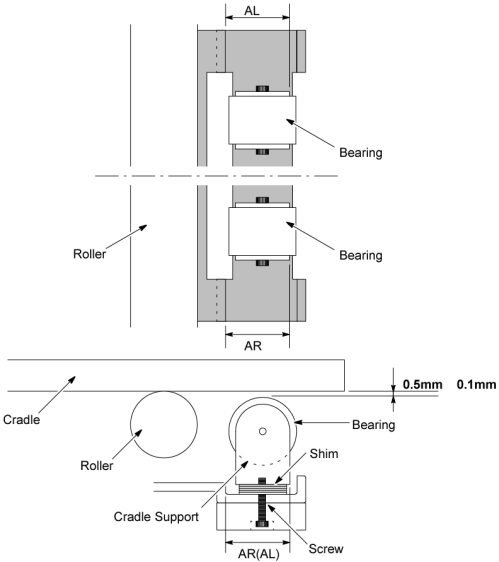

Operating Documentation
Direction 5181166-800, Rev# 7
BrightSpeed Select Service Methods Adv
Operating Documentation |
| Required Persons | Preliminary Reqs | Procedure | Finalization |
|---|---|---|---|
| 1 |
| Last Revised: | 16 March 2007 |
"Remove power from Table by turning off “120VAC”, “Axial Drive” and “HVDC” switches on the service switch panel."
Remove the Table right and left side covers.
Move the cradle to the Out Limit position by hand.
Measure the distances “AR” and “AL”, and write them down with the first decimal place.
Remove the screw, then adjust the gap between the cradle and the cradle support bearing by using the shim, so that the gap becomes 0.5 ± 0.1 mm .
Adjust the position of the cradle support to meet the “AR” and “AL” recorded at Step 4, and tighten the screw.
Illustration 1: Gap between Cradle and Cradle Support

Restore the Table to original configuration.
No finalization required.